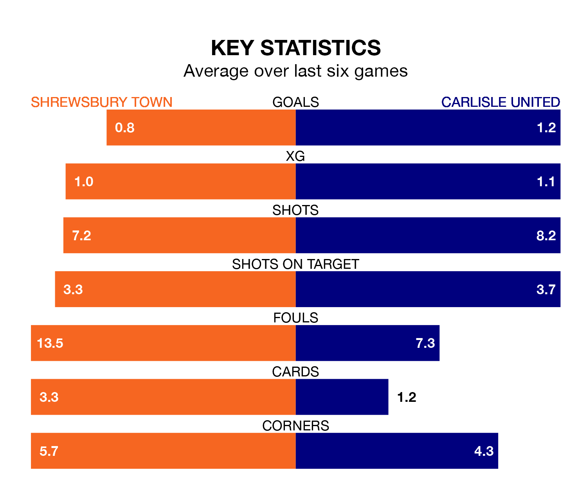

Carlisle United make the journey to the Croud Meadow to play Shrewsbury Town on Saturday looking to pick up points to end their three-game losing streak.
Carlisle's struggles have left them with just three points from their last six EFL League One matches, while their opponents have earned six from a possible 18.
Carlisle are bottom of the table after 37 games, of which they have won five and drawn eight, earning 23 points.
Shrewsbury are six places ahead of United in 18th, with 12 wins and five draws putting them on 41 points.
With 28 goals in 38 games so far this season, Town are the league's lowest scorers with 0.7 goals per game. And they are conceding more than average, letting in 55 goals at a rate of 1.4 per game.
The away team are also below average scorers, with 0.9 goals per game, compared to a league average of 1.3. They have conceded 1.8 goals per game.
In the last three years, Shrewsbury and Carlisle have played each other on three occasions. Shrewsbury won two of them and Carlisle one.
Their last meeting was on September 2, when Carlisle won 2-0 at home.
Shrewsbury's last match was on Tuesday, a 3-0 loss against Exeter City.
Carlisle lost 3-2 against Barnsley last time out, also on Tuesday, with Daniel Butterworth and Luke Armstrong on the scoresheet.
Saturday's match will be refereed by Simon Mather, who has taken charge of 11 EFL League One games so far this season, issuing seven red cards and booking 63 players. He has awarded one penalty.
The last Shrewsbury game Mather refereed was a 3-0 away loss to Barnsley on October 24. He is yet to oversee a match featuring Carlisle this season.
Updated: 15:10 (UTC), 15/03/24